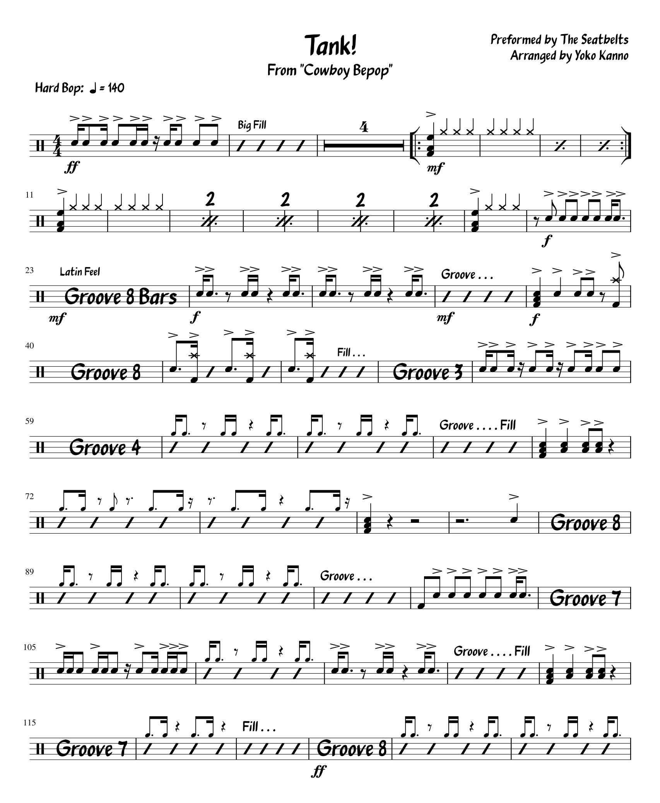
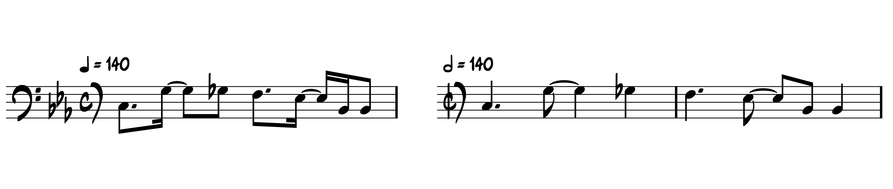

Chart: “Tank!” from Cowboy Bebop
Posted on May 2, 2021

Now that things are starting to warm up, I’ve started rewatching one of my favorite shows, which quite possibly has the most badass theme song ever:
Even if you’ve never heard this tune before, you should probably conclude by the 15 second mark that it’s a lot of fun to play on pretty much any instrument. And you know what? It is!
I never got around to watching Cowboy Bebop until my freshman year in college. I could gush over many parts of the show, but obviously we’ll be focusing on the show’s undeniable kickass soundtrack. The opening theme is a number called “Tank!”; the opening uses a 90 second edit of the full number, which is about 3 ½ minutes long.
“Tank!” (along with most of the show’s music) was composed by Yoko Kanno. In addition to solo work, Kanno has been composing for shows and movies since the early 90’s — one of her credits includes Kids on the Slope, a miniseries that produced the greatest moment of drumming in entertainment history. Meanwhile, the band for Cowboy Bebop is a group called the Seatbelts, although it doesn’t look like they’ve done much outside of the show.
When I first got into the show, I whipped up a chart for the opening theme so I could play along on my drum set. It… wasn’t very good:
A few years later I cleaned it up and made it look like a real drum chart. I also spelled the name of the show correctly this time around.
Obviously “Tank!” is a big band piece, although I’m not sure what exact genre to call it. The primary flavors that jump out include the blues and some sort of “Latin”; there are a lot of blues licks, and the main riff is seems to take inspiration from 12 bar blues with a bit of trickery (Cm Fm G+ A+). Meanwhile the Latin comes through from the rhythm that drives the bassline:
You should recognize the pattern, which is invariably known as a tresillo. The drummer on the soundtrack (Akira Sotoyama) toys with the bassline rhythm, playing a songo–type groove. For another perspective, here’s the band playing “Tank!” live in 2001 (I must warn you, the sax solo on this live version might melt your face off).
To create the chart, I took more cues from what the rest of the band is playing rather than the drummer’s exact execution, to keep it from becoming too specific. Some of the instructions and figures come from my own interpretation of how I would chart the song as a composer; I also added a few things the drummer doesn’t do to keep things interesting.
As I’ve come across different Latin jazz charts and sheet music, I’ve always wondered why some composers use cut time for Latin (with a half note pulse), compared to a slower 4/4 (quarter note pulse). As an example, which one of these following basslines is correct?
I haven’t found an answer that satisfies me, but Latin charts in 2/2 are very common. I originally wrote this chart in 4/4, since I tend to hear music as being driven by quarter notes and 8th notes. However, I have two versions today: 4/4 and cut time. All I had to do was copy the notes from the first version, and past them into a second version using MuseScore’s handy “Paste Double Duration” feature. A few tweaks later and I have a second chart in no time!
“Tank!” on Songwhip.